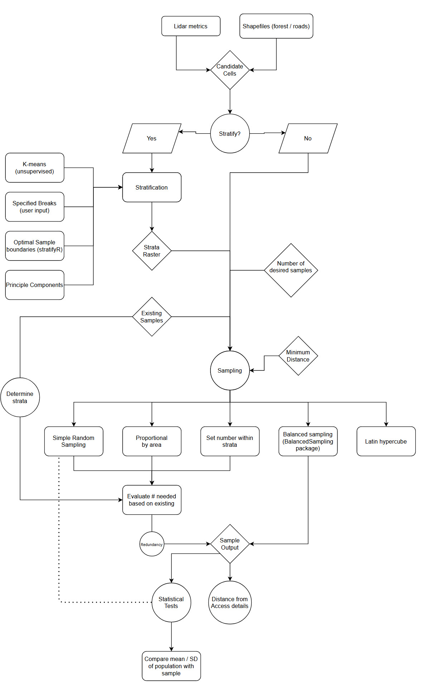

Discussion points
Methods
Do we think that all the methods presented are realistic and valuable. Some methods have more wiggle room for sample selection, while others can be more rigid due to their implementation within previous functions.
Need to discuss the methods and determine which should be included/explored in our final product.
Need to integrate already established samples
Incorporation of already acquired sample plots needs to be incorporated into the structurally guided sampling protocol - if available. There are a number of potential avenues to do this including:
- Assess number of acquired samples within strata and incorporate values into needed sample sizes - i.e like in
RMFinventory - Evaluate whether strata are over/under sampled using available algorithms - Quantiles, spatial distribution (thresholds?) etc.
The following is derived from (Malone, Minansy, and Brungard 2019), who outline the use of the hypercube evaluation of legacy sample (HELS) algorithm original presented in (Carré, McBratney, and Minasny 2007)) for determining where additional samples are required in the presence of already available samples.
Essentially the goal of adapted HELS is to identify the environmental coverage of existing sample sites, and simultaneously identifying where there are gaps in the environmental data that are not covered by these same existing sample sites. Once this is achieved, new sample sites are added - where the user selects how many sites they can afford to get - and these are allocated preferentially to areas where existing sample coverage is most sparse.
The conditioned latin hypercube code provided does not introduce already acquired samples, though it does have the functionality to do so using the include paramter. This needs to be explored further. A good vignette describing this along side a comparison the HELS algorithm is presented here.
Algorithm creation
With a basis established in the RMFinventory package, I have begun scripting some of the methods described in this brief overview of what I hope the package will entail. With guidance from Martin Q I have a good understanding of what I need to do to start to script the different methods together.

Agenda for future
In terms of future steps I think it wise that we discuss the following:
- Stratification approaches - do these suffice - do we know of more / improved methods?
- Sampling procedures - do these suffice - do we know of more / improved methods?
- Scripting approach - I am not a software engineer nor a statistician… Alot of this scripting is new to me so any advice that resources/collaboration would be highly valued.
- Datasets to use - Which datasets should we use to test the approaches - prefferable having alread established sampling protocols
- Publishing - What testing / comparisons do we want to do to show the efficacy of this project. This could also lead well into #3.
References
Carré, F., Alex B. McBratney, and B. Minasny. 2007. “Estimation and potential improvement of the quality of legacy soil samples for digital soil mapping.” Geoderma 141 (1-2): 1–14. https://doi.org/10.1016/j.geoderma.2007.01.018.
Malone, Brendan P, Budiman Minansy, and Colby Brungard. 2019. “Some methods to improve the utility of conditioned Latin hypercube sampling,” 1–17. https://doi.org/10.7717/peerj.6451.